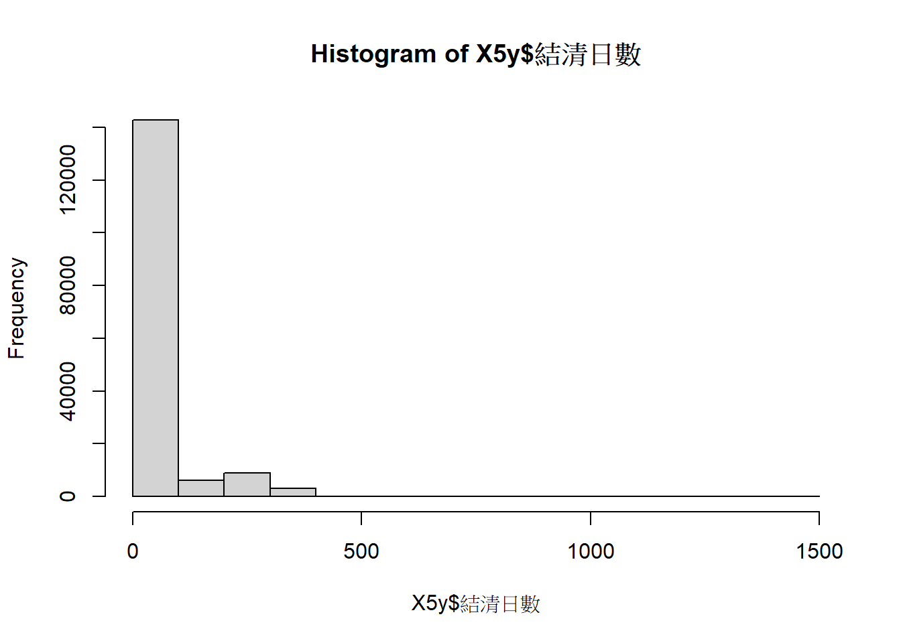

3 資料清理
# 日期處理
# 登記日期處理
y <- as.numeric(str_sub(X5y$登記日期,
start = 1,
end=str_locate(X5y$登記日期,"年")[[1]]-1))+1911
m <- str_sub(X5y$登記日期,
start=str_locate(X5y$登記日期,"年")[[1]]+1,
end=str_locate(X5y$登記日期,"月")[[1]]-1)
d <- str_sub(X5y$登記日期,
start=str_locate(X5y$登記日期,"月")[[1]]+1,
end=str_locate(X5y$登記日期,"日")[[1]]-1)
X5y$登記日期1 <- as.Date(paste(y,m,d, sep = "-"))
#登記日期轉年月日星期
X5y$年 <-as.character(year(X5y$登記日期1))
X5y$月 <-as.character(month(X5y$登記日期1))
X5y$日 <-as.character(day(X5y$登記日期1))
X5y$星期 <-as.character(wday(X5y$登記日期1))
#X5y <- X5y %>% select(年,月,日,星期,everything())
# 清結日期處理
y <- as.numeric(str_sub(X5y$清結日期,
start = 1,
end=str_locate(X5y$清結日期,"年")[[1]]-1))+1911
m <- str_sub(X5y$清結日期,
start=str_locate(X5y$清結日期,"年")[[1]]+1,
end=str_locate(X5y$清結日期,"月")[[1]]-1)
d <- str_sub(X5y$清結日期,
start=str_locate(X5y$清結日期,"月")[[1]]+1,
end=str_locate(X5y$清結日期,"日")[[1]]-1)
X5y$清結日期1 <- as.Date(paste(y,m,d, sep = "-"))
# 登記~結清日數
X5y$結清日數 <- mday(days(X5y$清結日期1-X5y$登記日期1))
summary(X5y$結清日數)## Min. 1st Qu. Median Mean 3rd Qu. Max. NA's
## 0.0 26.0 54.0 61.2 60.0 1420.0 3493
## # A tibble: 3 × 3
## `X5y$結清日數 > 60` n prop
## <lgl> <int> <dbl>
## 1 FALSE 135209 0.824
## 2 TRUE 25425 0.155
## 3 NA 3493 0.0213 #出生日期處理
y <- as.numeric(str_sub(X5y$出生日期,
start = 1,
end=str_locate(X5y$出生日期,"年")[[1]]-1))+1911
m <- str_sub(X5y$出生日期,
start=str_locate(X5y$出生日期,"年")[[1]]+1,
end=str_locate(X5y$出生日期,"月")[[1]]-1)
d <- str_sub(X5y$出生日期,
start=str_locate(X5y$出生日期,"月")[[1]]+1,
end=str_locate(X5y$出生日期,"日")[[1]]-1)
X5y$出生日期1 <- as.Date(paste(y,m,d, sep = "-"))
X5y$年齡 <- year(X5y$登記日期1)-year(X5y$出生日期1)
summary(X5y$年齡)## Min. 1st Qu. Median Mean 3rd Qu. Max. NA's
## 13.00 25.00 36.00 37.56 48.00 103.00 2## # A tibble: 3 × 3
## `年齡 > 75` n prop
## <lgl> <int> <dbl>
## 1 FALSE 163994 0.999
## 2 TRUE 131 0.000798
## 3 NA 2 0.0000122 #刪除舊欄位
#X5y <- X5y %>% select(-出生日期,-登記日期,-清結日期)
# 前次工作時間處理
X5y$前次工作時間_起 <-str_split_i(X5y$前次工作時間,"~",1)
X5y$前次工作時間_迄 <- str_split_i(X5y$前次工作時間,"~",2)
#前次工作時間_起 (運算)
y <- str_split_i(X5y$前次工作時間_起,"年",1)
y[y==""] <- NA # 用NA取代空白
y <- as.numeric(y)+1911
t1 <- str_split_i(X5y$前次工作時間_起,"年",2)
m <- str_split_i(t1,"月",1)
t2 <- str_split_i(t1,"月",2)
d <- str_split_i(t2,"日",1)
X5y$前次工作時間_起 <- as.Date(ifelse(is.na(y),NA,paste(y,m,d, sep = "-")))
#前次工作時間_迄 (運算)
y <- str_split_i(X5y$前次工作時間_迄,"年",1)
y[y==""] <- NA
y <- as.numeric(y)+1911
t1 <- str_split_i(X5y$前次工作時間_迄,"年",2)
m <- str_split_i(t1,"月",1)
t2 <- str_split_i(t1,"月",2)
d <- str_split_i(t2,"日",1)
X5y$前次工作時間_迄 <- as.Date(ifelse(is.na(y),NA,paste(y,m,d, sep = "-")))
#前次工作年數
X5y$前次工作年數 <-round(mday(days(X5y$前次工作時間_迄-X5y$前次工作時間_起))/365,1)
summary(X5y$前次工作年數)## Min. 1st Qu. Median Mean 3rd Qu. Max. NA's
## -0.70 0.50 1.40 3.91 4.40 115.10 79518## # A tibble: 3 × 3
## `前次工作年數 > 25` n prop
## <lgl> <int> <dbl>
## 1 FALSE 83064 0.506
## 2 TRUE 1545 0.00941
## 3 NA 79518 0.484 #失業日數
X5y$失業日數 <-round(mday(days(X5y$登記日期1-X5y$前次工作時間_迄)),0)
X5y$失業年數 <- round(X5y$失業日數/365,2)
summary(X5y$失業年數)## Min. 1st Qu. Median Mean 3rd Qu. Max. NA's
## -5.09 0.10 0.58 2.89 3.03 1913.36 79518## # A tibble: 3 × 3
## `失業年數 > 25` n prop
## <lgl> <int> <dbl>
## 1 FALSE 83808 0.511
## 2 TRUE 801 0.00488
## 3 NA 79518 0.484 #刪除舊欄位
#X5y <- X5y %>% select(-前次工作時間)
#處理行政區
X5y$居住行政區 <- str_sub(X5y$地址, 1, 6)
#工作地點與居住行政區
#居住地點分布
F <- X5y %>% select(年,居住行政區) %>%
filter(str_detect(居住行政區, "市")|str_detect(居住行政區, "縣"))
X5y <- X5y %>%
filter(str_detect(居住行政區, "市")|str_detect(居住行政區, "縣")) %>%
mutate(居住市=str_sub(居住行政區,1,2))
X5y %>% group_by(居住市) %>%
summarise(人數=n()) %>% arrange(desc(人數)) %>%
mutate(prop = round(人數/sum(人數),3)) %>%
filter(prop>0.001)## # A tibble: 11 × 3
## 居住市 人數 prop
## <chr> <int> <dbl>
## 1 高雄 152802 0.931
## 2 屏東 3205 0.02
## 3 台南 3006 0.018
## 4 台中 955 0.006
## 5 嘉義 630 0.004
## 6 新北 613 0.004
## 7 桃園 530 0.003
## 8 彰化 477 0.003
## 9 雲林 347 0.002
## 10 台北 274 0.002
## 11 台東 261 0.002 X5y <- X5y %>%
mutate(居住區 = str_split_i(F$居住行政區,"市",2))
X5y %>% group_by(居住區) %>%
summarise(人數=n()) %>% arrange(desc(人數)) %>%
mutate(prop = round(人數/sum(人數),3)) %>%
filter(prop>0.001)## # A tibble: 42 × 3
## 居住區 人數 prop
## <chr> <int> <dbl>
## 1 鳳山區 20576 0.125
## 2 三民區 18372 0.112
## 3 楠梓區 12023 0.073
## 4 左營區 10742 0.065
## 5 前鎮區 10216 0.062
## 6 苓雅區 8454 0.052
## 7 小港區 7570 0.046
## 8 大寮區 7468 0.046
## 9 鼓山區 6274 0.038
## 10 岡山區 5950 0.036
## # ℹ 32 more rows## [1] 7 X5y$個案區分1 <- str_split_i(X5y$個案區分,";",1)
X5y$個案區分2 <- str_split_i(X5y$個案區分,";",2)
X5y$個案區分3 <- str_split_i(X5y$個案區分,";",3)
X5y$個案區分4 <- str_split_i(X5y$個案區分,";",4)
X5y$個案區分5 <- str_split_i(X5y$個案區分,";",5)
X5y$個案區分6 <- str_split_i(X5y$個案區分,";",6)
X5y$個案區分7 <- str_split_i(X5y$個案區分,";",7)
X5y$身分數 <- 7-(is.na(X5y$個案區分1)+
is.na(X5y$個案區分2)+
is.na(X5y$個案區分3)+
is.na(X5y$個案區分4)+
is.na(X5y$個案區分5)+
is.na(X5y$個案區分6)+
is.na(X5y$個案區分7))
#刪除不用欄位
#X5y <- X5y %>% select(-電話,-手機,-電子信箱,-個案區分,)
#教育程度
X5y %>% count(教育程度)## # A tibble: 9 × 2
## 教育程度 n
## <chr> <int>
## 1 其他 691
## 2 博士 158
## 3 國中 10881
## 4 國小 3190
## 5 大學 68017
## 6 專科 18525
## 7 碩士 5804
## 8 高中 8826
## 9 高職 48025 X5y$教育程度1 <- ifelse(X5y$教育程度=="國小"|X5y$教育程度=="國中","國中小",
ifelse(X5y$教育程度=="高職"|X5y$教育程度=="高中","高中職",
ifelse(X5y$教育程度=="大學"|X5y$教育程度=="大專","大專學",
ifelse(X5y$教育程度=="碩士"|X5y$教育程度=="博士","碩博士",
"其他"))))
X5y %>% count(教育程度1)## # A tibble: 5 × 2
## 教育程度1 n
## <chr> <int>
## 1 其他 19216
## 2 國中小 14071
## 3 大專學 68017
## 4 碩博士 5962
## 5 高中職 56851## # A tibble: 5 × 2
## 英文語言能力 n
## <chr> <int>
## 1 不懂 112947
## 2 普通 24860
## 3 稍懂 22741
## 4 精通 3535
## 5 <NA> 34 X5y$英文能力1 <- ifelse(X5y$英文語言能力=="不懂","不懂",
ifelse(X5y$英文語言能力=="普通"|X5y$英文語言能力=="稍懂","尚可",
ifelse(X5y$英文語言能力=="精通","精通",NA)))
X5y %>% count(英文能力1)## # A tibble: 4 × 2
## 英文能力1 n
## <chr> <int>
## 1 不懂 112947
## 2 尚可 47601
## 3 精通 3535
## 4 <NA> 34## # A tibble: 5 × 2
## 日文語言能力 n
## <chr> <int>
## 1 不懂 152888
## 2 普通 3042
## 3 稍懂 7449
## 4 精通 703
## 5 <NA> 35 X5y$日文能力1 <- ifelse(X5y$日文語言能力=="不懂","不懂",
ifelse(X5y$日文語言能力=="普通"|X5y$日文語言能力=="稍懂","尚可",
ifelse(X5y$英文語言能力=="精通","精通",NA)))
X5y %>% count(日文能力1)## # A tibble: 4 × 2
## 日文能力1 n
## <chr> <int>
## 1 不懂 152888
## 2 尚可 10491
## 3 精通 163
## 4 <NA> 575## # A tibble: 18 × 2
## 清結原因 n
## <chr> <int>
## 1 公立就業服務機構推薦成功 27718
## 2 公立就業服務機構推薦成功－一般就業服務 4391
## 3 公立就業服務機構推薦成功－一般就業服務(4人以下廠商) 360
## 4 利用本部資訊就業-其他 30380
## 5 利用本部資訊就業-台灣就業通 39927
## 6 利用本部資訊就業-求才快報 4334
## 7 利用本部資訊就業-現場徵才 1204
## 8 利用本部資訊就業-觸控式電腦 3432
## 9 改利用其他管道求職 6845
## 10 暫停就業-其他 3533
## 11 暫停就業-參加職業訓練 2307
## 12 暫停就業-家中有事 2878
## 13 暫停就業-準備考試/升學 4446
## 14 求職者尚具求職需求，需持續服務 1760
## 15 無法聯繫求職者 8593
## 16 系統自動關閉 15442
## 17 自行就業－其他 3074
## 18 <NA> 3493 X5y$清結原因1 <- NA
X5y$清結原因1 <- ifelse (str_detect(X5y$清結原因, "推薦成功"),
"推薦成功",
ifelse (str_detect(X5y$清結原因, "利用本部資訊就業"),
"利用本部資訊就業",
ifelse (str_detect(X5y$清結原因, "暫停就業"),
"暫停就業",
ifelse (str_detect(X5y$清結原因, "改利用其他管道"),
"改利用其他管道",
ifelse (str_detect(X5y$清結原因, "系統自動關閉"),
"系統自動關閉",
ifelse (str_detect(X5y$清結原因, "尚具求職需求"),
"尚具求職需求",
ifelse (str_detect(X5y$清結原因, "無法聯繫"),
"無法聯繫",
ifelse (str_detect(X5y$清結原因, "自行就業"),
"自行就業",NA))))))))
X5y %>% count(清結原因1)## # A tibble: 9 × 2
## 清結原因1 n
## <chr> <int>
## 1 利用本部資訊就業 79277
## 2 尚具求職需求 1760
## 3 推薦成功 32469
## 4 改利用其他管道 6845
## 5 暫停就業 13164
## 6 無法聯繫 8593
## 7 系統自動關閉 15442
## 8 自行就業 3074
## 9 <NA> 3493 #年齡分組1
#青年18-29, #青壯年30-44, #中高齡45-64, #銀髮55以上, #高齡65以上
X5y$年齡分組1 <- ifelse (X5y$年齡<18, "少年< 18",
ifelse (X5y$年齡<30,"青年18-29",
ifelse (X5y$年齡<45,"青壯年30-44",
ifelse (X5y$年齡<65,"中高齡45-64",
ifelse (X5y$年齡>64,"高齡 >65",NA)))))
X5y %>% count(年齡分組1)## # A tibble: 6 × 2
## 年齡分組1 n
## <chr> <int>
## 1 中高齡45-64 48935
## 2 少年< 18 777
## 3 青壯年30-44 51287
## 4 青年18-29 58877
## 5 高齡 >65 4239
## 6 <NA> 2 # 年齡分組2
#每5歲一級距， #15以下, #16-20, #21-25, #26-30, .....
X5y$年齡分組2 <- ifelse (X5y$年齡<=15, "<= 15",
ifelse (X5y$年齡<=20,"16-20",
ifelse (X5y$年齡<=25,"21-25",
ifelse (X5y$年齡<=30,"26-30",
ifelse (X5y$年齡<=35,"31-35",
ifelse (X5y$年齡<=40,"36-40",
ifelse (X5y$年齡<=45,"41-45",
ifelse (X5y$年齡<=50,"46-50",
ifelse (X5y$年齡<=55,"51-55",
ifelse (X5y$年齡<=60,"56-60",
ifelse (X5y$年齡<=65,"61-65",
ifelse (X5y$年齡>65,"> 65",NA))))))))))))
X5y %>% count(年齡分組2)## # A tibble: 13 × 2
## 年齡分組2 n
## <chr> <int>
## 1 16-20 13577
## 2 21-25 29658
## 3 26-30 19900
## 4 31-35 16311
## 5 36-40 16958
## 6 41-45 17852
## 7 46-50 15856
## 8 51-55 13845
## 9 56-60 10844
## 10 61-65 5944
## 11 <= 15 80
## 12 > 65 3290
## 13 <NA> 2## # A tibble: 35 × 2
## 障別 n
## <chr> <int>
## 1 上肢體障礙者 1
## 2 上肢體障礙者;無 100
## 3 下肢體障礙者 4
## 4 下肢體障礙者;無 200
## 5 先天代謝異常 1
## 6 其他 6
## 7 其他;無 73
## 8 因罕見疾病而致身心功能障礙者;無 5
## 9 多重障礙者 3
## 10 多重障礙者;無 104
## # ℹ 25 more rows X5y$障別1 <-
ifelse (str_detect(X5y$障別, "上肢體障礙者"),
"上肢體障礙者",
ifelse (str_detect(X5y$障別, "下肢體障礙者"),
"下肢體障礙者",
ifelse (str_detect(X5y$障別, "其他"),
"其他",
ifelse (str_detect(X5y$障別, "多重障礙者"),
"多重障礙者",
ifelse (str_detect(X5y$障別, "罕見疾病"),
"罕見疾病致身心障礙者",
ifelse (str_detect(X5y$障別, "先天代謝異常"),
"先天代謝異常",NA))))))
X5y$希望待遇 <- as.integer(X5y$希望待遇)
X5y$前次工作薪資 <- as.integer(X5y$前次工作薪資)
#刪除重複資料
X5y <- unique(X5y)
#save(X5y, file = "F:/提供主計處資料/X5y.RData") #162197筆
#write_xlsx(X5y,"F:/提供主計處資料/X5y.xlsx") #162197筆
求職人次 <- nrow(X5y)
cat("5年求職人次(資料清理後):", 求職人次, "筆資料")## 5年求職人次(資料清理後): 162197 筆資料